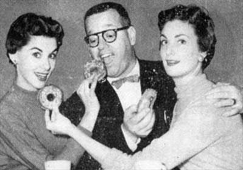
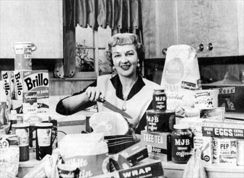
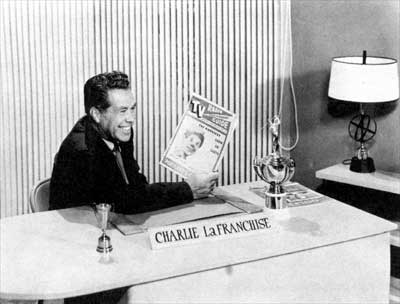
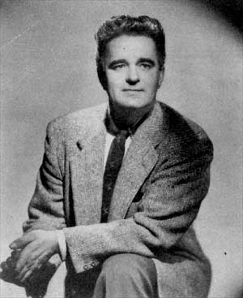
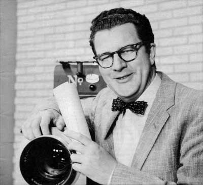

|
|
KLOR
Programs
Here
is
a
look
at
some
of
the
locally-produced
programs
featured
on
KLOR
during
it's
26 months
on
the
air.
|
 |
|
 |
|
|
Barney Keep, star of The Show on KLOR Tuesdays at 8
pm, is a great man for organization. One of his past efforts was "Left-handed and right-handed doughnut dunkers society." He had his picture taken (to show headier aspects of being presiding officer) with models Pat Carmen (left), Ardath
Borba. |
|
The
Show
Barney Keep, disc jockey turned TV star, will move his variety
half-hour, aptly called
The
Show, to KLOR's studios next Tuesday at 8
pm.
The
Show--called that, according to Keep, because when it first went on the air the producers "expected it to run for
a while but weren't sure the cast could keep
up"--is
Portland's only live song-and-dance TV show.
Barney emcees the entire production in the same
slow-tempoed style which
made him the early morning's top-rated disc jockey on KEX, drawling his introductions of such costars as songstress Jeanne Hackett or Mike Davenport in a strictly off-the-cuff manner.
Barney's final on-the-air performance seldom shows any resemblance to the rehearsal, according to H. Richard Seller, producer of the show.
Barney Quick With Ad Lib
"Whatever pops into Barney's head is what comes out his mouth," Seller said. Frequently, he breaks up the show.
Once, when a famous personality was being introduced, the fellow hung back and seemed to stand as far out of camera range as possible.
Barn, was saying, "And he came all the way from New York . . ."
Then he paused.
Reaching out a hand to drag the reluctant performer to him,
he added all, that is, but
the last two feet."
In addition to Keep and Miss Hackett, whose songs are heard on every weekly performance,
The Show
frequently features dramatic bits with Davenport, and always opens with a bit
of four-four tempo by the Hamiltones, versatile combo headed by singing star John Hamilton.
Each show also stars the Arthur Murray TV dancers under the direction of Pat Harden.
Each week the show features some special attraction. This can range all the way from the University of Portland basketball stars showing off their trick shots and formations to appearance of the headline act from
Amato's supper club.
Once it even included one of the original Mack Sennet comedies from the Modern Museum of Art's collections, with appropriate comment by Keep.
The Show, previously in a 6:30
pm Monday night spot, hopes for a larger audience at it's new 8
pm time on the new channel.
|
|
|
The
World,
The
West
and
The
Weather
Sherman Washburn, prominent Portland newscaster, will present two local programs on
KLOR, Monday through Friday, in addition to heading up channel 12's news department. Washburn will telecast
The World, The West and The Weather at 6:15
pm, and
Final
Edition, at 10:30
pm. |
|
|
|
 |
|
Vere
Kneeland,
KLOR's
Lady
of
the
House |
|
Lady
of
the
House
In the world of radio and television, where a "nom de medium" is common as a coffee break, the star of KLOR's "Lady of the House" program is anticipating a rare treat.
Best known to past radio listeners as Kay West, she'll be
using her own name, Vere Kneeland, in television.
"The program is designed to prove it's a woman's world," said Mrs. Kneeland. "And a
woman's world is an interesting
one." |
|
|
| Stars
of
Tomorrow
| |
 |
| |
A
KLOR
broadcast
from
December
1956.
Accordionist
Bob
Cantin
performs
in
front
of
the camera
while
Lowell
Farmer
waits
off
stage
for
his
appearance.
[Photo
courtesy
Bob
Cantin] |
Portland audiences will be able to see as well as hear those precocious little hams, some of whom probably will graduate from top billings in
Stars of
Tomorrow and go on to strike gold
in the entertainment world.
"Uncle Nate" Cohn, who through nearly 29 years as
impresario of young talent on the radio broadcast of
Stars of
Tomorrow, will take to the telewaves at 2:30
pm Sundays on KLOR, channel 12.
The showcase program will follow in the same tradition that helped develop such talent as Jane Powell, Johnny Ray and
Kay St. Germain, top three of Uncle Nate's outstanding products.
Cohn has
major-domoed the
show since its inception, and probably it's the biggest thing n his life. But he
has an instinctive feeling for kids in show business. When he might have been tearing his knickers in a game of cowboys and
Indians,
Cohn himself was starring as Harold Hoff, "The Wonder Boy", on the Sullivan-Considine circuit.
The hour-long radio show will be telescoped into a half hour on KLOR. But Cohn will see to it that stage-struck youngsters from
two-and-a-half
to 21 get an opportunity to go through their paces before the cameras.
Click
here
for
more
information
and
photos
from
Stars
of
Tomorrow
at
"Yesterday's
KPTV".
|
|
|
|
 |
|
KLOR
Sportscaster
Charlie
LaFranchise |
|
LaFranchise
on
Sports
On
the
spot
sports
coverage
to
suit
the
taste
of
every
viewer
will
be
available
on
KLOR,
under
the
direction
of
experienced
Sportscaster
Charlie
LaFranchise.
"Telecasts
of
various
sports
activities
in
our
immediate
area
will
develop
more
fans
formerly
unfamiliar
with
major
or
minor
events,"
LaFranchise
predicted.
Television
coverage
of
sports
celebrities,
athletes,
coaches
and
managers
tends
to
build
fan
interest
and
loyalty,
he
said.
Athletic
promoters
across
the
nation
have
found
that
telecasts
of
local
and
regional
games,
boxing
matches,
wrestling
and
other
sports
events
have
provided
the
incentive
to
ally
thousands
of
fans
with
a
particular
sport.
Research
indicates
that
both
live
and
filmed
sportscasts
have
considerable
viewer
response.
TV
retailers
report
they
have
sold
sets
solely
because
the
purchaser
is
interested
in
sports
features.
"The
best
shows
are
action
shows,
and
you'll
never
lack
for
action
in
a
sporting
event,"
LaFranchise
said,
but
qualified,
"Unless,
that
is,
Cleveland
gets
into
the
world
series
again."
Local
sports
enthusiasts
will
receive
the
latest
scores,
fight
decisions,
golf
results
and
commentary
Monday
through
Friday
at
10:40
p.
in.
on
LaFranchise's
sportscast.
He
also
will
have
a
15-minute
show
Tuesday
nights
from
6:30
to
6:45.
LaFranchise,
41,
is
a
native
of
Chicago
who
settled
down
in
Portland
nearly
20
years
ago.
He
started
his
professional
radio
career
at
Station
KVAN,
Vancouver,
Wash.,
but
left
that
spot
to
joint
the
staff
of
KPOJ
in
1945.
A
sports
enthusiast
since
his
first
participant
days
playing
high
school
football
and
basketball
under
Ed
Krause,
now
athletic
director
at
Notre
Dame,
LaFranchise
has
broadcast,
written
and
been
active
in
sports
events
since
he
came
to
the
Northwest.
|
|
|
|
 |
|
Ron
Myron,
host
of
afternoon
show
on
KLOR. |
|
The
Ron
Myron
Show
The housewife
who
wants
entertainment as a garnish for her afternoon coffee break will find
The
Ron Myron
Show, a daily KLOR feature from 3:30 to 4
pm, her special dish.
The program will feature guest personalities prominent in this area, but its producers have no intention of stopping there. Children from 3 to 6 years of age will have their chance to
speak up from the "Tiny
Tot" corner. Teenagers, representing Portland schools, also will appear from time to time.
Doni Hurd, who will double as the station's "weather girl," will be Myron's hostess
and
co-entertainer. She halls from
Hillsboro. Portland's well-known organist, John Ernmel, will provide music for the show and take part in its activities.
|
|
|
|
 |
|
John
Salisbury,
host
of
Academy
Theatre |
Academy
Theatre
John Salisbury, Saturday night host on KLOR's
Academy
Theatre, spends most of his working hours behind the scenes as Channel 12's Program
Coordinator
--
a position which keeps him
constantly
hopping to stay on top of the myriad details in the daily operation of a TV station. This type of work is somewhat new to John, since most of his career has been spent before the cameras, radio microphones, on the legitimate stage and
in vaudeville. It is John's belief, however, that with the rapid changes taking place in TV, being behind the scenes offers considerably more security than being on camera.
"The mortality rate for talent is extremely high these days," he says. "Television is an ogre which eats it alive. Still, I like to keep my hand in."
"I've discovered that hosting
Academy Theatre exposes me, at one time or another, to practically everyone who owns a television set because our films have such a wide general appeal. Through this one show, I've become acquainted with many new and wonderful friends in Portland, and that means a great deal to me."
John has a vast store of information on
movie-land which dates back to the days of the silents. He owns a large collection of soundtrack recordings from films dating from 1929, plus rare recordings of stage and vaudeville personalities of the past and present. When time permits on
Academy
Theatre, John features some of these in a special Record Room segment. Because of his wide knowledge of films, John personally selects and edits the preview scenes of current pictures featured in the first half hour of
Academy
Theatre, and actually programs the entire show. Easy as it may look on the air, John spends approximately four hours weekly In preparation, timing every segment so that the entire two hours will run smoothly.
John has been in Portland for a little over a year. He came here from KUTV, Salt
Lake City, where he was radio and television News Editor. He'll be taking over that post on KLOR this summer while Sherm Washburn vacations. John hails originally from Minneapolis, Minnesota, where he spent almost twenty years in radio, theatre and TV. He also spent three years in Washington, D. C. teaching and broadcasting radio. In his spare time he writes, primarily for the theatre. He recently completed a new
play
--"Love
Scene"--
which he claims is ideal for little theatres and stock companies.
"It has one simple set and only two characters," says John. "In stock, where budget is important, this is a big item." John should know. He spent twelve years as a writer-actor in professional summer stock in Minnesota where several of his plays were produced. He also put in
a stretch with the Long Beach Theatre Guild in California with Laraine Day as his leading lady. One of, his
plays
--
"This Blessed
Union"
--
won first place this year in the Portland Civic Theatre Playwriting Contest, and will be produced in the Blue Room June 29th.
John is
married to a lovely blonde named Pat, and they have two
children
--
a boy, Clark, aged
2
1/2, and a girl, Carey, born last July in Portland. They live in a comfortable old house on Mt. Tabor where they are rapidly becoming green-thumbers and barbecue experts. They are extremely fond of Portland and its people.
"Rain?" says John. "Let it pour. We love it here and feel at home
--
and the gang at KLOR is by far the finest I've ever been associated with. These are the important things. Pat and I hope we'll be around these parts for a long time because we're certainly counting our blessings for this wonderful first year the people of Portland have given us."
TV-Radio
Prevue,
July
22,
1956 |
|
|


This
page
last
updated
on
August 27, 2025 |
|
Yesterday's KPTV Website design and content ©2003-2025 by Ron Dunevant, LLC unless otherwise noted.
This website is not affiliated with or operated by KPTV or its parent company, Gray Television.
Please direct any inquiries to: yesterdayskptv@gmail.com.
|
| |